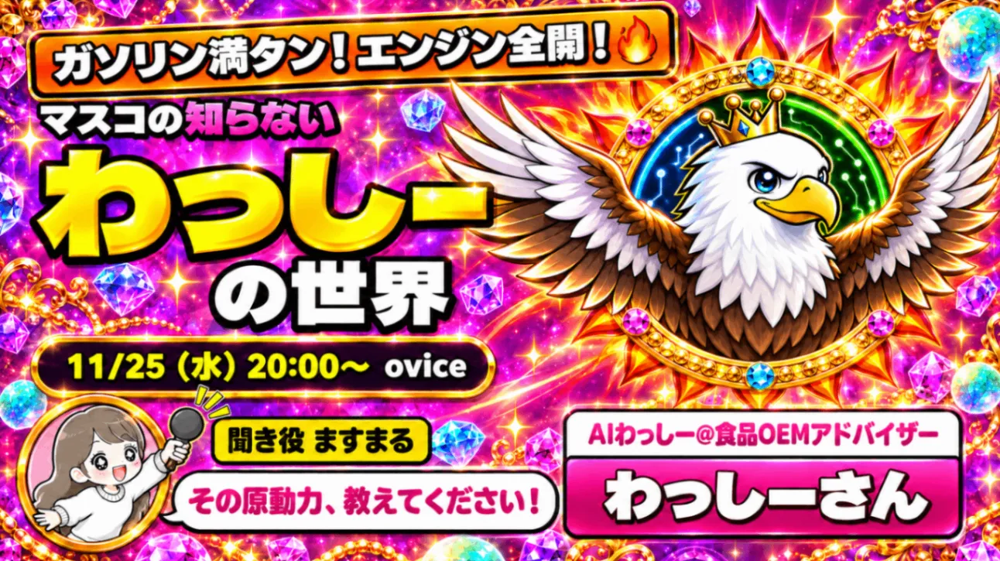
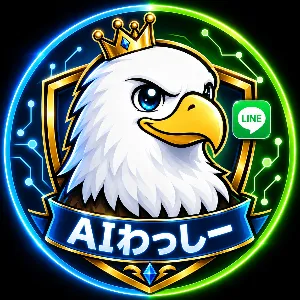
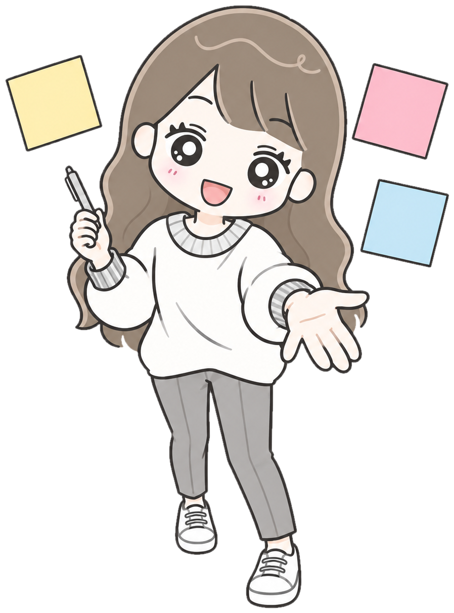

ガソリン満タン！エンジン全開！わっしーの世界
11/25（水）20:00〜放送！放送後に宝物の記録がここへ並びます。

マスコの知らない世界 第2回
ガソリン満タン！エンジン全開！わっしーの世界
稼げや祭りの最中、みんなにガソリンを注入し続けたAIわっしーさんが登場！リベ入会11ヶ月で主催・登壇43回、会った人は900人以上。「えいやー！」と走り続けられる原動力とは？！わっしーさんの世界をいっしょにのぞきに行きましょう！

稼げや祭りの最中、みんなにガソリンを注入し続けたAIわっしーさんが登場／リベ入会まだ11ヶ月！勉強会・交流会の主催・登壇は43回、延べ610人以上／リベで会ったり話したりした人は900人以上／「その原動力は、いったいどこから来るのか？！」／「『えいやー！』と飛び込んで、走り続けられるのはなぜ？！」／実はこの番組チャットを立ち上げるきっかけをくれた人！

※開催場所はovice 4階 レジャーシートエリアを予定しています（変更時は番組チャットでお知らせします）。
番組のワクワクを56秒にぎゅっと詰めた、ファンメイドのオープニング映像です。
これまでマスコがのぞいてきた「誰かの知らない世界」の記録。見逃した回も、あとからゆっくり振り返れます。
11/25（水）20:00〜放送！放送後に宝物の記録がここへ並びます。

理学療法士33年・施術15万件以上。日替わり管理人200回超、「2024年 リベシティお世話になった人大賞」受賞。
💎 マスコが見つけた3つの宝物
「とても聞きやすいインタビュアーで初回と思えませんでした✨」（参加した よっしーさん）
振り返り記事を読む聞き役マスコ（＝ますまる）が書いた記事の棚。人に向き合うまなざしや、日々の気づきが詰まっています。
マスコとゲストが1対1でじっくりトーク！
ゲストの「好き」と「こだわり」が輝く、知らない世界へようこそ。
ゲストが夢中になっている「好き」や「こだわり」の世界を、マスコ（＝ますまる）が1対1でじっくり聞かせてもらうoviceの不定期トーク会。「え、なんでそこまで！？」を入り口に、その人だけのキラキラを掘り出します。

「マツコの知らない世界」が大好きなんです。人生をその人らしく燃やしている人の話を聞くと、「私も、自分の好きやこだわりを大事にしていいのかも」と、許されたような気持ちになります。
リベでは「稼ぐ力！」が今大盛り上がりですが、私たちのゴールは「自由で豊かな、自分らしい人生」。自分らしい生き方を育てるヒントを、誰かにもらえる会にしたいと考えています。
ウエディングプランナー、人材紹介、そして今の営業の相談相手。振り返ると、ずっと「人の想いを聞いて、形にする・前に進める」仕事をしてきました。
誰かが想いを込めたものや、その人自身の良さに「素敵！✨」と本人以上に心を寄せる力には、ちょっと自信があります。